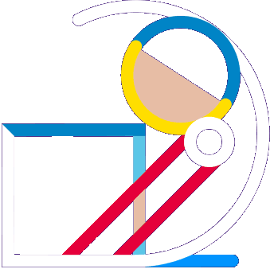

<div class="quizrt-c-gameplay">
  <div *ngIf="waiting; else gameplay" class="quizrt-c-gameplay__loader">
    
    <h5 class="quizrt-c-gameplay__loader__msg quizrt-c-text">Waiting for the Opponent to join</h5>
  </div>
  <ng-template #gameplay>
    <div *ngIf="noOpponentsFound; else opponentsFound">
      <div class="quizrt-c-text">Oops! Couldn't find any opponents</div>
      <button class="back" mat-raised-button [routerLink]="['/play/${topic}/single-player']">Play Single</button>
      <button class="back" mat-raised-button color="primary" (click)="Home()">
        Home</button>
    </div>
    <ng-template #opponentsFound>
      <div class="quizrt-c-text">
        OpponentsFound
      </div>
    </ng-template>
  </ng-template>
</div>

<div *ngIf="start && !gameOver">
  <mat-card class="questions">
    {{currentQuestion.question}}
    <br>
    <br>
    <mat-radio-group class="options" *ngIf="!answered">
      <mat-radio-button class="radio-button" *ngFor="let o of options" [value]="o" (click)="scoreCalculator(o); answered = true">
        {{o}}<br>
      </mat-radio-button>
    </mat-radio-group>
  </mat-card>
  <!-- <button class="end" *ngIf="!gameOver" mat-raised-button (click)="endGame()">End Game</button> -->
  <!-- <mat-card>{{this.currentQuestion}}</mat-card> -->

  <!-- <mat-grid-list cols="2" rowHeight="5:1.5"> -->
  <mat-grid-list cols="2" rowHeight="5:1.5">
    <mat-grid-tile>{{username}}: <br> {{ score }}</mat-grid-tile>
    <mat-grid-tile>{{otherUser}}:<br>{{ otherUserScore }}</mat-grid-tile>
  </mat-grid-list>
  <br>
</div>

<!-- <mat-card class="noOpponent" *ngIf="!start && gameOver">
  Players not found...Go Back -->

<!-- </mat-card> -->

<!-- <div id="clock" *ngIf="start && !gameOver">
  {{counter}}
</div> -->


<div class="result">
  <mat-card *ngIf="start && gameOver && score>otherUserScore">You Win<br>
    <button mat-raised-button [routerLink]="['/play']">
      Go Back</button>
  </mat-card>
  <mat-card *ngIf="start && gameOver && score<otherUserScore">Opponent Wins<br>
    <button mat-raised-button [routerLink]="['/play']">
      Go Back</button>
  </mat-card>
  <mat-card *ngIf="start && gameOver && score === otherUserScore">It's a Draw<br>
    <button mat-raised-button [routerLink]="['/play']">
      Go Back</button>
  </mat-card>
</div>

<progress-bar *ngIf="start && !gameOver" [progress]="counter*10" [color-degraded]="{'10': '#1B7397', '20': '#05668D', '30':'#055D81','40': '#055474','50': '#044B67','60': '#04415A','70': '#03384D','80': '#032F41','90': '#022634','100': '#021C27'}">
</progress-bar>

<!-- <script> -->
<!-- function disableButton(){ -->
<!-- console.log("radio-button disabled"); -->

<!-- } -->
<!-- </script> -->
